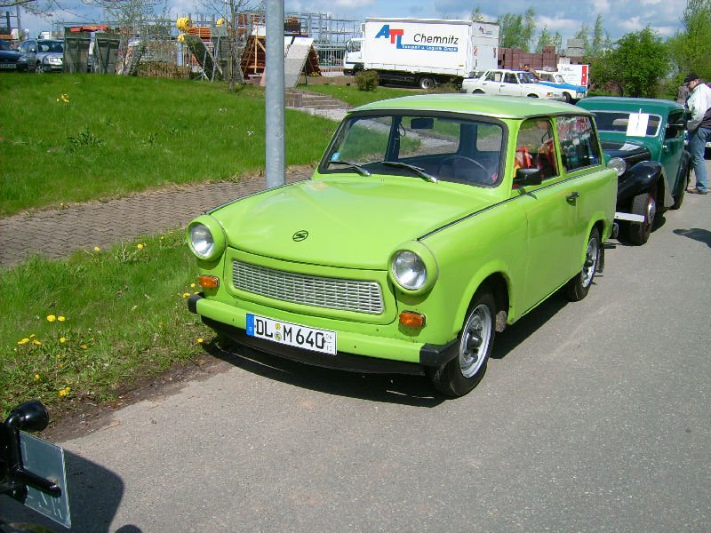

Az első magyar autó
Alig tíz évvel azt követően, hogy Karl Benz elkészítette az első motoros kocsit, Hatsek Béla optikus mester 1895-ben vásárolt is egy 1,5 lóerős Benz Velo-t.
Bár valószínűleg nem ezzel a szándékkal tette, de Hatsek Béla ekkor beírta magát a magyar autózás történetébe, hiszen övé lett az első autó Magyarországon. Persze ezt követően sem lepték el azonnal az ország útjait az akkor még félelmetesnek tartott járművek, a nem éppen olcsó autók, ám hamar megmutatkozott az igény a sebességre és a versenyzésre is.
Óriási dolognak számított, amikor 1900. november végén megalakult a Magyar Automobil Club, hiszen az előtte lévő évben még egy belügyminiszterhez küldött jelentésben azt írták, hogy olyan kevés automobil van Budapesten, hogy bárminemű hatósági intézkedés korai lenne. Természetesen ez csak a hatósági álláspont volt, az első autók tulajdonosai nem így érezték, ezért is volt nagy szükség az egyesület megalapítására, amivel hivatalosan is kezdetét vette a magyar autózás története.
veterán autók

Trabant 601
A Trabant 601 (vagy Trabant P601 sorozat) egy Trabant modell volt, melyet a VEB Sachsenring gyártott Zwickauban, Szászországban. Ez volt a modell harmadik generációja, amelyet a leghosszabb gyártási időre, 1964 és 1990 között építettek. Ennek eredményeként ez a legismertebb Trabant modell, és gyakran egyszerűen csak "Trabant" vagy "Trabi" néven emlegetik. A hosszú gyártási sorozat alatt összesen 2 818 547 Trabant 601-et gyártottak, és ez volt a leggyakoribb jármű Kelet-Németországban
lada 1
A Lada az orosz AvtoVAZ járműgyártó vállalat gépkocsimárkája. A szovjet időszakban ezt a márkanevet csak az exportra szánt járműveknél használták, ugyanazokat a modelleket a belső szovjet piacon Zsiguli márkanéven forgalmazták, de az autók a keleti blokkbeli szocialista országokba is cirill betűs Zsiguli felirattal érkeztek a forgalmazás első éveiben.
1993-ban a Vjacseszlav Zubarev által 1992-ben alapított TTS szerződést írt alá az AvtoVAZ-val. 1995—ben Naberezhnye Chelny városában megnyílt az első teljes értékű LADA autóközpont, amely közvetlen szállítást indított az autógyárból. 1995-ben irodát nyitottak Kazanban. 1997-ig az autókat Naberezhnye Chelnyből hajtották. Után-vasúti szállításgyakran a citromhoz hasonlítják, de annál savanyúbb, jellegzetesebb, mérete kisebb és színe jellemzően zöld.
Wolga
A Volga személygépkocsi az autógyártás közel 130 éves múltjához viszonyítva viszonylag rövid „életet élt”, de a szocialista tábor történetébe örökre beírta a nevét.
A Volga tervezését az 1950-es évek elején kezdték el, mert szükség volt az akkorra már elavult Pobjeda leváltására.
Az első prototípusokat 1954 tavaszán kezdték tesztelni. Elődjéhez (a Pobjeda-hoz) képest nagyobb karosszériát, egybefüggő első- és hátsó panoráma szélvédőket, és erősebb felül szelepelt 2445 cmᵌ motort kapott, ami 48 kilowattot (66 lóerő) teljesített. Két év tesztelés után a sorozatgyártás 1956 október 10-én kezdődött a GAZ (Gorkovszkíj AvtoZavod) Autógyárban. (Az más kérdés, hogy az első 1000 db-ot a régi 2120 cmᴲ-es oldalt szelepelt Pobjeda motorral szerelték, mert a Volga motorjait csak 1957-ben kezdték el gyártani)

Lada níva
A Lada Niva Legend,[3] korábbi nevén Lada Niva, VAZ–2121, VAZ–2131 és Lada 4×4 (oroszul: ВАЗ-2121, ВАЗ–2131, Лада Нива) az AvtoVAZ által tervezett és gyártott négykerék-meghajtású, kis (ferdehátú) és kompakt (kombi és pickup) terepjárók sorozata, amelyet az AvtoVAZ tervezett és gyártott 1977 óta. Kezdetben a vidéki piacot célozták meg, a későbbi modellek a városi felhasználókat is megcélozták. A háromajtós, majd később ötajtós 4×4 ferdehátúakat számos piacon Lada márkanév alatt értékesítették,[4] és 1977 óta folyamatosan gyártják.
Wartburg
1.3 egy alsó-középkategóriás autó, amelyet a kelet-német Automobilwerk Eisenach (EMW) gyártott a Wartburg márkanév alatt 1988 és 1991 között. Különlegessége az volt, hogy a márka történetében először nem kétütemű motor került bele, hanem egy Volkswagen Golfból származó benzinmotor.
Az 1.3 elnevezés ennek a motornak a hengerűrtartalmára utal. Hasonló modernizálás volt ez, mint a Trabant 1.1 esetében, de mint ott is, túl későn. Németország újraegyesítése után rövidesen, 1991-ben leállt az autó gyártása és vele együtt a Wartburg gyár is befejezte működését. Gyártó EMW (Wartburg)
Uaz
.Az UAZ vagy Uljanovszkij Avtomobilnij Zavod (oroszul: Ульяновский автомобильный завод, УАЗ, románul: Ulyanovsky avtomobilny zavod, UAZ, lit. "Ulyanovsk Automobile Plant") egy autógyártó, amelynek székhelye Uljanovszkban, Oroszországban található, és terepjárókat, buszokat és teherautókat gyárt. 2000 óta a Sollers autóipari csoport része. [2]
Az UAZ legismertebb az UAZ-469 haszonjárműről, amelyet széles körben használtak katonai járműként a keleti blokkban és az egész világon. Az UAZ gyár 1941-ben kezdte meg a termelést a szovjet háborús erőfeszítések részeként. 2016-ban 51 706 UAZ járművet gyártottak. [3
Köszönjük, hogy feliratkozott hírlevelünkre!